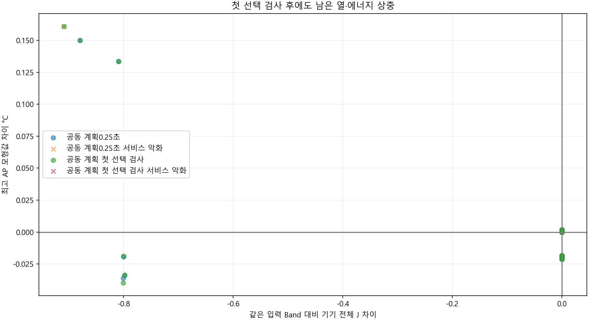
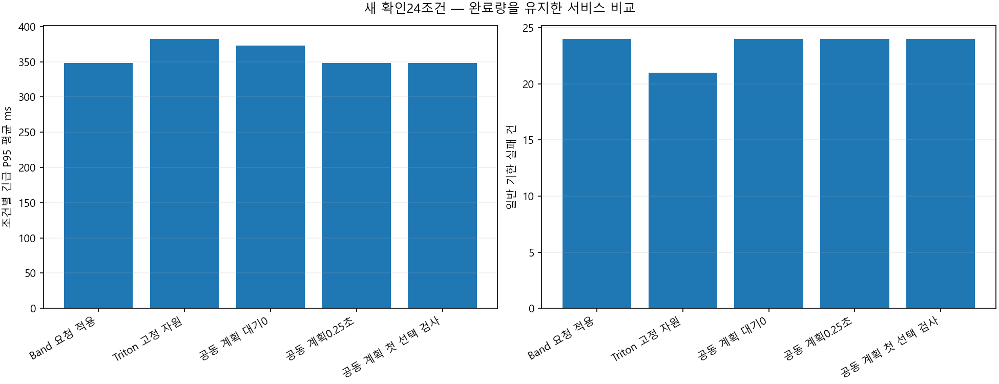
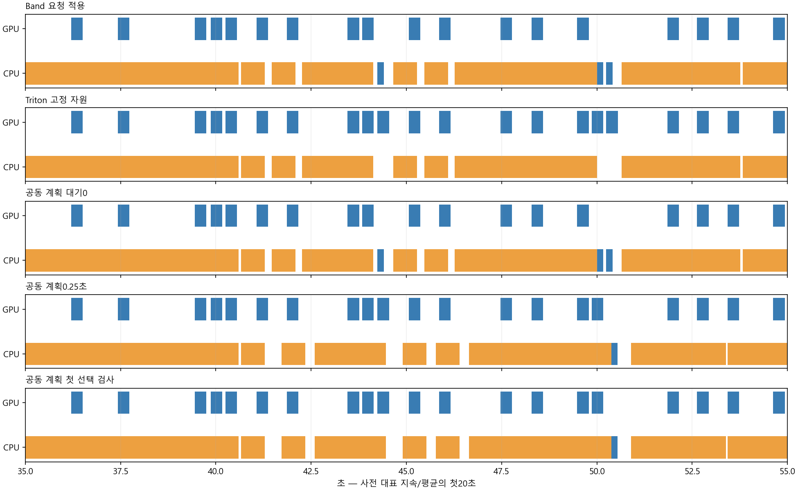
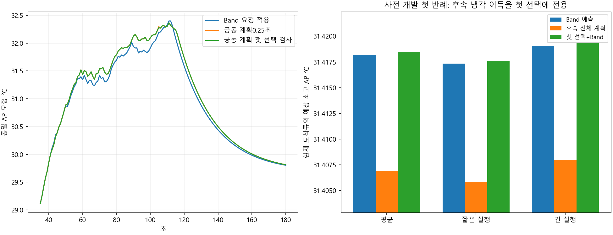
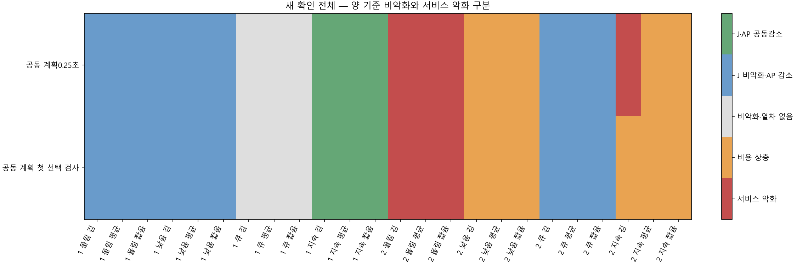

개발 진단: 큰 창24개 선별 손실0, 선택527개 중 첫 선택AP 위반12개. 새 확인은 별도 seed·24조건·5정책입니다.
개발 적격 없음으로 동결, 전체 정책 미채택. AP 모형값은 표면온도가 아니며 실제 폰 절감을 입증하지 않습니다.
결과·한계 · 전체 확인 CSV · 원인 진단 · 첫 선택 검사 제거 비교
| 규칙 | 판단 차이 |
|---|---|
| Band 요청 적용 | 원 재현 규칙 |
| Triton 고정 자원 | 원 재현 규칙 |
| 공동 계획 대기0 | 원 공동 계획 |
| 공동 계획0.25초 | 원 공동 계획 |
| 공동 계획 첫 선택 검사 | 같은 공동 계획 + 실제 첫 선택3문맥 비악화 검사 |
| 정책 | 완료 | 예정 | 긴급 실패 | 일반 실패 | P95 평균 ms | J 평균 | 최고 AP 평균 | 양 기준 AP 감소 | 첫 선택 차단 |
|---|---|---|---|---|---|---|---|---|---|
| Band 요청 적용 | 1584 | 1584 | 0 | 24 | 347.95826 | 152.27039 | 30.855077 | 0 | 0 |
| Triton 고정 자원 | 1584 | 1584 | 0 | 21 | 382.42694 | 152.72747 | 30.900866 | 0 | 0 |
| 공동 계획 대기0 | 1584 | 1584 | 0 | 24 | 373.26772 | 152.2758 | 30.850831 | 0 | 0 |
| 공동 계획0.25초 | 1584 | 1584 | 0 | 24 | 348.33631 | 152.06217 | 30.86288 | 12 | 0 |
| 공동 계획 첫 선택 검사 | 1584 | 1584 | 0 | 24 | 347.95826 | 152.06217 | 30.862756 | 12 | 44 |
| 원자료 | seed | 문맥 | 원후보 | 선택계획 | 첫 선택 위반 | 큰 창 진단 | 놓친 더 좋은 계획 |
|---|---|---|---|---|---|---|---|
| development | 813010101 | mean | 공동 계획 대기0 | 3 | 0 | 0 | 0 |
| development | 813010101 | mean | 공동 계획0.25초 | 113 | 4 | 4 | 0 |
| development | 813010101 | short_context | 공동 계획 대기0 | 3 | 0 | 0 | 0 |
| development | 813010101 | short_context | 공동 계획0.25초 | 114 | 4 | 4 | 0 |
| development | 813010101 | long_context | 공동 계획 대기0 | 3 | 0 | 0 | 0 |
| development | 813010101 | long_context | 공동 계획0.25초 | 106 | 4 | 4 | 0 |
| development | 813010102 | mean | 공동 계획 대기0 | 3 | 0 | 0 | 0 |
| development | 813010102 | mean | 공동 계획0.25초 | 64 | 0 | 4 | 0 |
| development | 813010102 | short_context | 공동 계획 대기0 | 3 | 0 | 0 | 0 |
| development | 813010102 | short_context | 공동 계획0.25초 | 70 | 0 | 4 | 0 |
| development | 813010102 | long_context | 공동 계획 대기0 | 3 | 0 | 0 | 0 |
| development | 813010102 | long_context | 공동 계획0.25초 | 60 | 0 | 4 | 0 |
| final | 815020101 | mean | 공동 계획 대기0 | 5 | 1 | 0 | 0 |
| final | 815020101 | mean | 공동 계획0.25초 | 104 | 3 | 4 | 0 |
| final | 815020101 | short_context | 공동 계획 대기0 | 5 | 1 | 0 | 0 |
| final | 815020101 | short_context | 공동 계획0.25초 | 105 | 2 | 4 | 0 |
| final | 815020101 | long_context | 공동 계획 대기0 | 5 | 1 | 0 | 0 |
| final | 815020101 | long_context | 공동 계획0.25초 | 99 | 3 | 4 | 0 |
| final | 815020102 | mean | 공동 계획 대기0 | 3 | 0 | 0 | 0 |
| final | 815020102 | mean | 공동 계획0.25초 | 91 | 3 | 4 | 0 |
| final | 815020102 | short_context | 공동 계획 대기0 | 3 | 0 | 0 | 0 |
| final | 815020102 | short_context | 공동 계획0.25초 | 89 | 2 | 4 | 0 |
| final | 815020102 | long_context | 공동 계획 대기0 | 3 | 0 | 0 | 0 |
| final | 815020102 | long_context | 공동 계획0.25초 | 92 | 3 | 4 | 1 |
| seed | 부하 | 문맥 | 후보 | 양 기준 판정 | Band J 차이 | Band AP 차이 | Band P95 차이 ms |
|---|---|---|---|---|---|---|---|
| 815030101 | low | mean | Triton 고정 자원 | 서비스 악화 | 0.28555104 | 0.045050629 | 137.8747 |
| 815030101 | low | mean | 공동 계획 대기0 | 비악화·열차 없음 | 0 | 0 | 0 |
| 815030101 | low | mean | 공동 계획0.25초 | J 비악화·AP 감소 | 0 | -0.018421147 | 0 |
| 815030101 | low | mean | 공동 계획 첫 선택 검사 | J 비악화·AP 감소 | 0 | -0.018421147 | 0 |
| 815030101 | low | short_context | Triton 고정 자원 | 서비스 악화 | 0.26363747 | 0.043796218 | 130.42855 |
| 815030101 | low | short_context | 공동 계획 대기0 | 비악화·열차 없음 | 0 | 0 | 0 |
| 815030101 | low | short_context | 공동 계획0.25초 | J 비악화·AP 감소 | 0 | -0.018334711 | 0 |
| 815030101 | low | short_context | 공동 계획 첫 선택 검사 | J 비악화·AP 감소 | 0 | -0.018334711 | 0 |
| 815030101 | low | long_context | Triton 고정 자원 | 서비스 악화 | 0.30746461 | 0.046305484 | 145.32086 |
| 815030101 | low | long_context | 공동 계획 대기0 | 비악화·열차 없음 | 0 | 0 | 0 |
| 815030101 | low | long_context | 공동 계획0.25초 | J 비악화·AP 감소 | 0 | -0.018502986 | 0 |
| 815030101 | low | long_context | 공동 계획 첫 선택 검사 | J 비악화·AP 감소 | 0 | -0.018502986 | 0 |
| 815030101 | queue | mean | Triton 고정 자원 | 비용 상충 | 0.016084743 | 0.012562912 | 0 |
| 815030101 | queue | mean | 공동 계획 대기0 | 비악화·열차 없음 | 0 | 0 | 0 |
| 815030101 | queue | mean | 공동 계획0.25초 | 비악화·열차 없음 | 0 | 0 | 0 |
| 815030101 | queue | mean | 공동 계획 첫 선택 검사 | 비악화·열차 없음 | 0 | 0 | 0 |
| 815030101 | queue | short_context | Triton 고정 자원 | 비용 상충 | 0.014734033 | 0.012041715 | 0 |
| 815030101 | queue | short_context | 공동 계획 대기0 | 비악화·열차 없음 | 0 | 0 | 0 |
| 815030101 | queue | short_context | 공동 계획0.25초 | 비악화·열차 없음 | 0 | 0 | 0 |
| 815030101 | queue | short_context | 공동 계획 첫 선택 검사 | 비악화·열차 없음 | 0 | 0 | 0 |
| 815030101 | queue | long_context | Triton 고정 자원 | 비용 상충 | 0.017435452 | 0.013084294 | 0 |
| 815030101 | queue | long_context | 공동 계획 대기0 | 비악화·열차 없음 | 0 | 0 | 0 |
| 815030101 | queue | long_context | 공동 계획0.25초 | 비악화·열차 없음 | 0 | 0 | 0 |
| 815030101 | queue | long_context | 공동 계획 첫 선택 검사 | 비악화·열차 없음 | 0 | 0 | 0 |
| 815030101 | burst | mean | Triton 고정 자원 | 비악화·열차 없음 | 0 | 0 | 0 |
| 815030101 | burst | mean | 공동 계획 대기0 | 비악화·열차 없음 | 0 | 0 | 0 |
| 815030101 | burst | mean | 공동 계획0.25초 | J 비악화·AP 감소 | 0 | -0.019695212 | 0 |
| 815030101 | burst | mean | 공동 계획 첫 선택 검사 | J 비악화·AP 감소 | 0 | -0.019695212 | 0 |
| 815030101 | burst | short_context | Triton 고정 자원 | 비악화·열차 없음 | 0 | 0 | 0 |
| 815030101 | burst | short_context | 공동 계획 대기0 | 비악화·열차 없음 | 0 | 0 | 0 |
| 815030101 | burst | short_context | 공동 계획0.25초 | J 비악화·AP 감소 | 0 | -0.021098469 | 0 |
| 815030101 | burst | short_context | 공동 계획 첫 선택 검사 | J 비악화·AP 감소 | 0 | -0.021098469 | 0 |
| 815030101 | burst | long_context | Triton 고정 자원 | 비악화·열차 없음 | 0 | 0 | 0 |
| 815030101 | burst | long_context | 공동 계획 대기0 | 비악화·열차 없음 | 0 | 0 | 0 |
| 815030101 | burst | long_context | 공동 계획0.25초 | J 비악화·AP 감소 | 0 | -0.018374506 | 0 |
| 815030101 | burst | long_context | 공동 계획 첫 선택 검사 | J 비악화·AP 감소 | 0 | -0.018374506 | 0 |
| 815030101 | sustained | mean | Triton 고정 자원 | 비용 상충 | 1.5873675 | 0.11115869 | 0 |
| 815030101 | sustained | mean | 공동 계획 대기0 | 서비스 악화 | 0.04324685 | -0.034231655 | 202.62958 |
| 815030101 | sustained | mean | 공동 계획0.25초 | J·AP 공동감소 | -0.79819039 | -0.033955889 | 0 |
| 815030101 | sustained | mean | 공동 계획 첫 선택 검사 | J·AP 공동감소 | -0.79819039 | -0.033642747 | 0 |
| 815030101 | sustained | short_context | Triton 고정 자원 | 비용 상충 | 1.4581254 | 0.10666387 | 0 |
| 815030101 | sustained | short_context | 공동 계획 대기0 | 서비스 악화 | 0.044597559 | -0.032189709 | 201.39817 |
| 815030101 | sustained | short_context | 공동 계획0.25초 | J·AP 공동감소 | -0.80045399 | -0.035943301 | 0 |
| 815030101 | sustained | short_context | 공동 계획 첫 선택 검사 | J·AP 공동감소 | -0.80045399 | -0.039666252 | 0 |
| 815030101 | sustained | long_context | Triton 고정 자원 | 비용 상충 | 1.7127483 | 0.11426186 | 0 |
| 815030101 | sustained | long_context | 공동 계획 대기0 | 서비스 악화 | 0.04189614 | -0.036289019 | 203.39919 |
| 815030101 | sustained | long_context | 공동 계획0.25초 | J·AP 공동감소 | -0.80030809 | -0.019215485 | 0 |
| 815030101 | sustained | long_context | 공동 계획 첫 선택 검사 | J·AP 공동감소 | -0.80030809 | -0.018898682 | 0 |
| 815030102 | low | mean | Triton 고정 자원 | 서비스 악화 | 0.28555104 | 0.045300711 | 137.8747 |
| 815030102 | low | mean | 공동 계획 대기0 | 비악화·열차 없음 | 0 | 0 | 0 |
| 815030102 | low | mean | 공동 계획0.25초 | 비용 상충 | 0 | 0.0019190254 | 0 |
| 815030102 | low | mean | 공동 계획 첫 선택 검사 | 비용 상충 | 0 | 0.0019190254 | 0 |
| 815030102 | low | short_context | Triton 고정 자원 | 서비스 악화 | 0.26363747 | 0.044039337 | 130.42855 |
| 815030102 | low | short_context | 공동 계획 대기0 | 비악화·열차 없음 | 0 | 0 | 0 |
| 815030102 | low | short_context | 공동 계획0.25초 | 비용 상충 | 0 | 0.0019167614 | 0 |
| 815030102 | low | short_context | 공동 계획 첫 선택 검사 | 비용 상충 | 0 | 0.0019167614 | 0 |
| 815030102 | low | long_context | Triton 고정 자원 | 서비스 악화 | 0.30746461 | 0.046562533 | 145.32086 |
| 815030102 | low | long_context | 공동 계획 대기0 | 비악화·열차 없음 | 0 | 0 | 0 |
| 815030102 | low | long_context | 공동 계획0.25초 | 비용 상충 | 0 | 0.0019211689 | 0 |
| 815030102 | low | long_context | 공동 계획 첫 선택 검사 | 비용 상충 | 0 | 0.0019211689 | 0 |
| 815030102 | queue | mean | Triton 고정 자원 | 비악화·열차 없음 | 0 | 0 | 0 |
| 815030102 | queue | mean | 공동 계획 대기0 | 비악화·열차 없음 | 0 | 0 | 0 |
| 815030102 | queue | mean | 공동 계획0.25초 | J 비악화·AP 감소 | 0 | -0.019752198 | 0 |
| 815030102 | queue | mean | 공동 계획 첫 선택 검사 | J 비악화·AP 감소 | 0 | -0.019752198 | 0 |
| 815030102 | queue | short_context | Triton 고정 자원 | 비악화·열차 없음 | 0 | 0 | 0 |
| 815030102 | queue | short_context | 공동 계획 대기0 | 비악화·열차 없음 | 0 | 0 | 0 |
| 815030102 | queue | short_context | 공동 계획0.25초 | J 비악화·AP 감소 | 0 | -0.021154703 | 0 |
| 815030102 | queue | short_context | 공동 계획 첫 선택 검사 | J 비악화·AP 감소 | 0 | -0.021154703 | 0 |
| 815030102 | queue | long_context | Triton 고정 자원 | 비악화·열차 없음 | 0 | 0 | 0 |
| 815030102 | queue | long_context | 공동 계획 대기0 | 비악화·열차 없음 | 0 | 0 | 0 |
| 815030102 | queue | long_context | 공동 계획0.25초 | J 비악화·AP 감소 | 0 | -0.018432209 | 0 |
| 815030102 | queue | long_context | 공동 계획 첫 선택 검사 | J 비악화·AP 감소 | 0 | -0.018432209 | 0 |
| 815030102 | burst | mean | Triton 고정 자원 | 비용 상충 | -0.019097719 | 0.023238539 | 0 |
| 815030102 | burst | mean | 공동 계획 대기0 | 서비스 악화 | 0 | 0 | 0 |
| 815030102 | burst | mean | 공동 계획0.25초 | 서비스 악화 | 0 | 0 | 0 |
| 815030102 | burst | mean | 공동 계획 첫 선택 검사 | 서비스 악화 | 0 | 0 | 0 |
| 815030102 | burst | short_context | Triton 고정 자원 | 비용 상충 | -0.020448428 | 0.023373866 | 0 |
| 815030102 | burst | short_context | 공동 계획 대기0 | 서비스 악화 | 0 | 0 | 0 |
| 815030102 | burst | short_context | 공동 계획0.25초 | 서비스 악화 | 0 | 0 | 0 |
| 815030102 | burst | short_context | 공동 계획 첫 선택 검사 | 서비스 악화 | 0 | 0 | 0 |
| 815030102 | burst | long_context | Triton 고정 자원 | 비용 상충 | -0.017747009 | 0.022434706 | 0 |
| 815030102 | burst | long_context | 공동 계획 대기0 | 서비스 악화 | 0 | 0 | 0 |
| 815030102 | burst | long_context | 공동 계획0.25초 | 서비스 악화 | 0 | 0 | 0 |
| 815030102 | burst | long_context | 공동 계획 첫 선택 검사 | 서비스 악화 | 0 | 0 | 0 |
| 815030102 | sustained | mean | Triton 고정 자원 | 비용 상충 | 1.5023788 | 0.12967375 | 0 |
| 815030102 | sustained | mean | 공동 계획 대기0 | 비용 상충 | 0 | 0.00027102228 | 0 |
| 815030102 | sustained | mean | 공동 계획0.25초 | 비용 상충 | -0.80955388 | 0.13358331 | 0 |
| 815030102 | sustained | mean | 공동 계획 첫 선택 검사 | 비용 상충 | -0.80955388 | 0.13363336 | 0 |
| 815030102 | sustained | short_context | Triton 고정 자원 | 비용 상충 | 1.38444 | 0.12618225 | 0 |
| 815030102 | sustained | short_context | 공동 계획 대기0 | 비용 상충 | 0 | 0.00026119811 | 0 |
| 815030102 | sustained | short_context | 공동 계획0.25초 | 비용 상충 | -0.8798204 | 0.1498871 | 0 |
| 815030102 | sustained | short_context | 공동 계획 첫 선택 검사 | 비용 상충 | -0.8798204 | 0.14993332 | 0 |
| 815030102 | sustained | long_context | Triton 고정 자원 | 비용 상충 | 1.6204551 | 0.13322514 | 0 |
| 815030102 | sustained | long_context | 공동 계획 대기0 | 비용 상충 | 1.749072e-10 | 0.00028100242 | 0 |
| 815030102 | sustained | long_context | 공동 계획0.25초 | 서비스 악화 | -0.90889902 | 0.16093179 | 9.0731 |
| 815030102 | sustained | long_context | 공동 계획 첫 선택 검사 | 비용 상충 | -0.90889902 | 0.16096503 | 0 |




